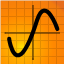
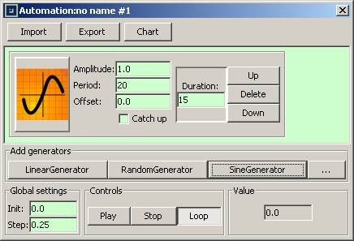
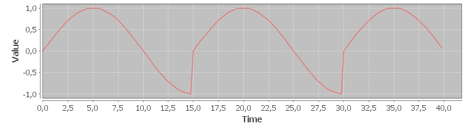
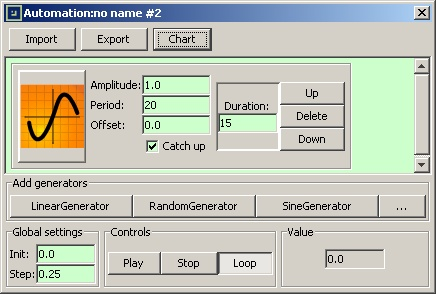
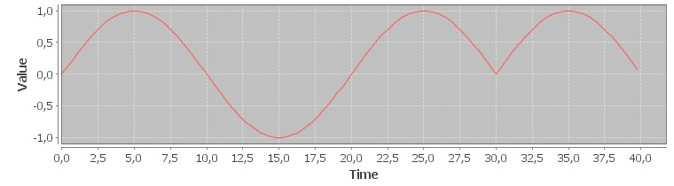

The Sine generator creates sine signal with the specified Period
, Amplitude
and Offset
.
If the Catch up
option is enabled, then the generator, when it
starts, will try to shift the phase of the sine so that it
starts at the current value of the automation.
 
 